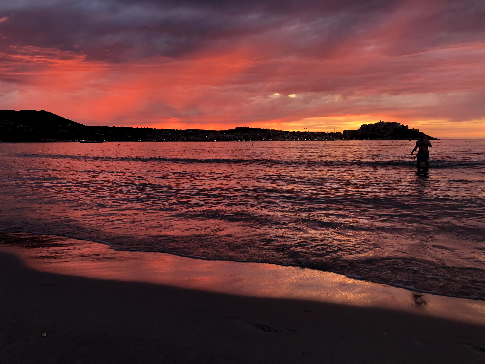

Destinations
Our best destination guides for you
-
Balagne's hills and villages

The view from Balagne's coastal hills is simply breathtaking. Rolling plains stretch out below, dotted with lush vegetation and wildflowers, while the sparkling waters of the Mediterranean Sea can be seen in the distance, giving way to an endless horizon.
-
Mount Cinto

Cinto, the towering peak of Corsica's mountains rises majestically against the clear blue sky. Occasional few fluffy clouds wrap around the highest summits, adding an extra layer of drama to an already spectacular landscape.
-
Calvi's beach an shopping experience
Catch beautiful sunsets, painting the sky in hues of orange, pink, and purple. As the day comes to a close, the peaceful sound of the waves and the warmth of the sun's final rays create a truly magical and serene atmosphere.
What other people think
Choose your next travel by learning from others
Amazing places
Find your dream destination on the map